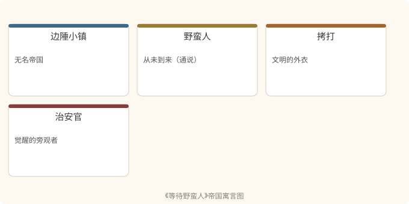

等待野蛮人
一、基本信息
| 作者 | J.M.库切 |
|---|---|
| 成书/出版 | 1980年（作者页 B161 口径：等待野蛮人（1980）） J.M. Coetzee — Encyclopaedia Britannica（百科全书） |
| 国别/地区 | 南非 |
| 时代 | 现当代 · 20世纪 |
| 体裁 | 长篇小说 |
| 语言 | 英语 |

《等待野蛮人》帝国寓言图（主题·结构图）
二、创作背景
作者页（B161）：库切 major_works 载'等待野蛮人（1980）、迈克尔·K的生活与时代（1983）、福（1986）'（B161 作者页定位，详见 chi 条核对）。
题材（通说待核）：帝国边陲小镇的治安官与'野蛮人'俘虏——无名的帝国寓言。
三、内容脉络
治安官收留被拷打致残的'野蛮人'女孩——焦土政策的谎言（通说待核）。
'野蛮人'从未到来（通说待核）。
四、主要人物表
| 人物 | 身份 | 说明 |
|---|---|---|
| 治安官 | 老治安官 | 觉醒的旁观者（通说待核） |
| 乔尔上校 | 特务 | 帝国的刀（通说待核） |
五、主题与艺术特点
- 帝国的自我幻影（通说）。
- 拷打与文明的外衣（通说）。
- '等待'的空转（通说待核）。
六、影响与评论
- 作者页：库切代表作（B161 作者页口径）。
J.M. Coetzee — Encyclopaedia Britannica（百科全书） - 2003年诺贝尔文学奖（作者级——通说待核，作者页核对）。
J.M. Coetzee — Encyclopaedia Britannica（百科全书）
七、阅读建议
难点
- 寓言的无国界设定。
- 拷打描写。
- 《等待野蛮人》（人民文学出版社/浙江文艺出版社版本，通说待核）。
- 英文原版。
先《耻》后本作。
八、待核实
- 1980年出版（Secker & Warburg说）核对。
- 治安官/乔尔人名核对。
- 帝国名（不具名设定）待核。
本页主要来源
J.M.库切的其他收录作品：迈克尔·K的生活和时代